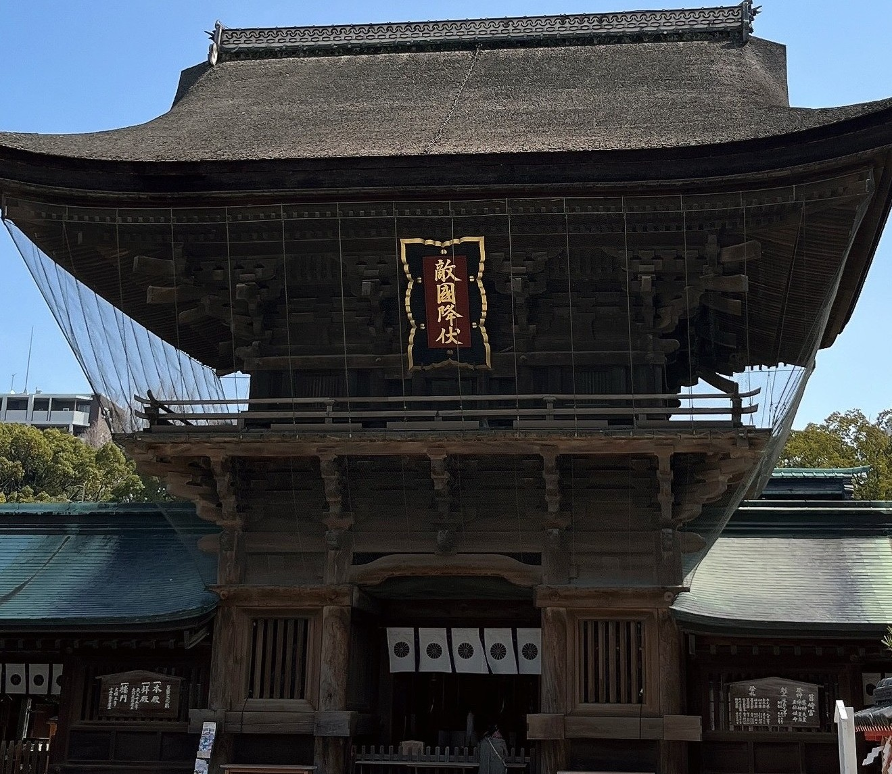
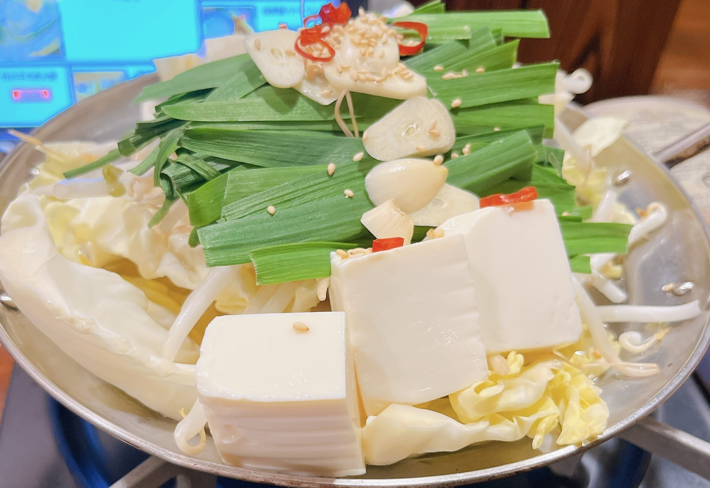
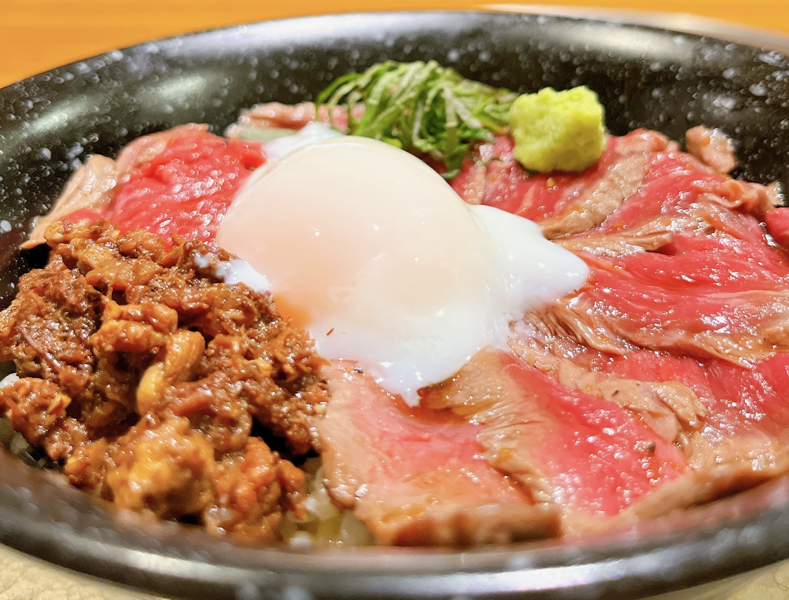
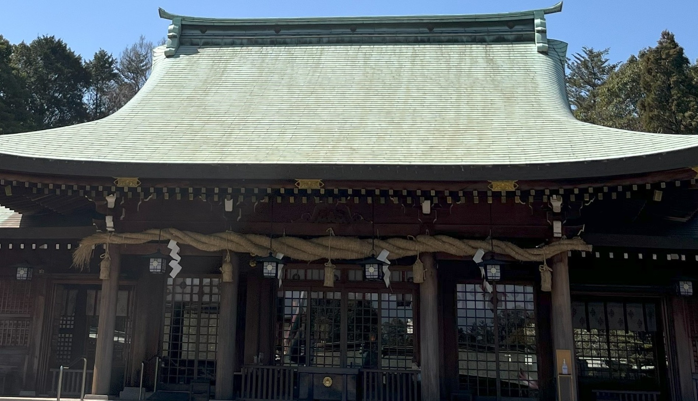
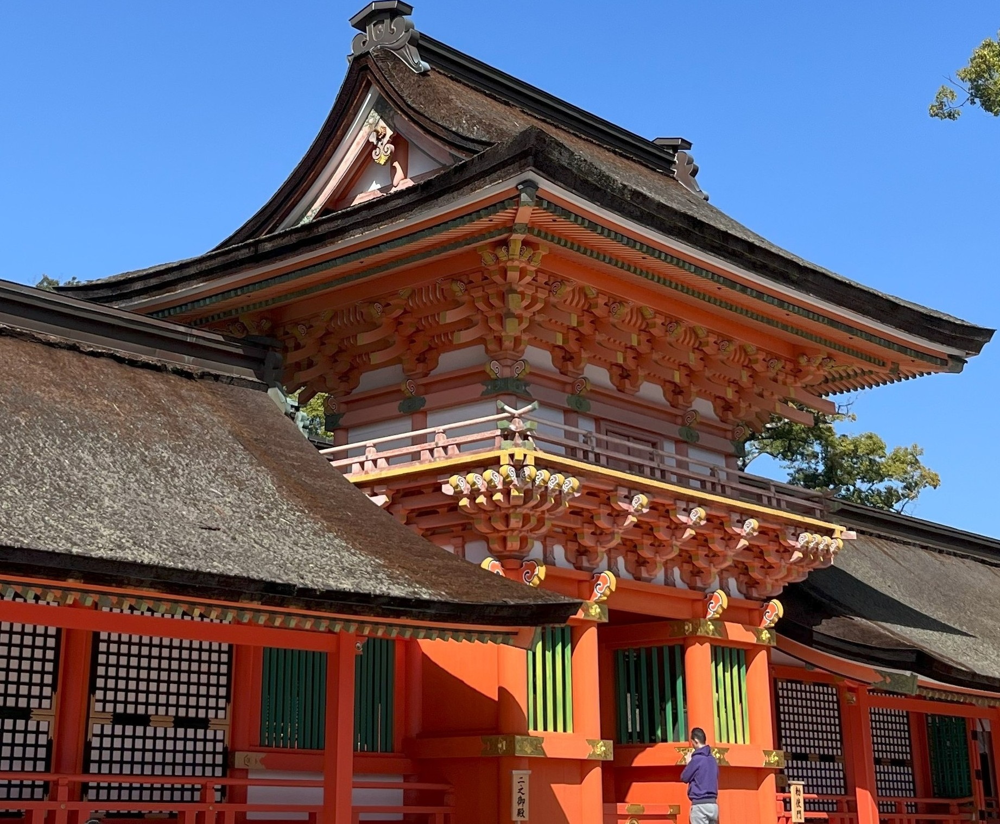
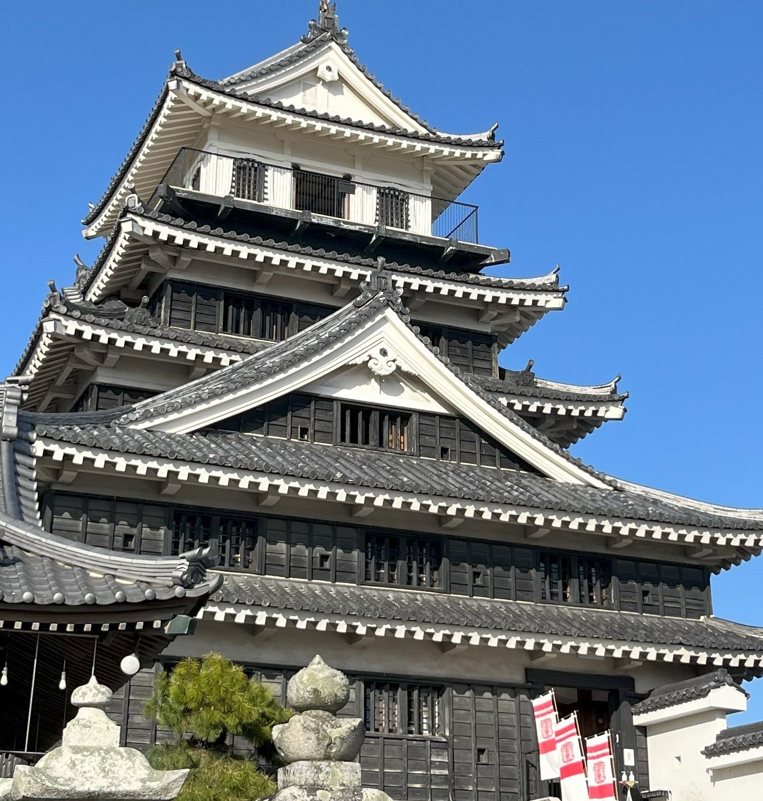

～福岡県&鹿児島県&熊本県&大分県編～
2023年3月11日～15日に九州4県を旅行した記事になります！
今回は初めて御朱印帳を購入した旅行ということもあり神社が多めです！
ご当地グルメも多く紹介しているので旅行のモデルコースになれば幸いです！
▶ 今回の旅の目次
日本三大八幡宮のひとつ！筥崎宮！
 日本三大八幡宮のひとつの筥崎宮！
醍醐天皇が宸筆された「敵国降伏」は力強さがありとても神秘的でした！
糸島半島の先端神社！桜井神社！
福岡県糸島市の先端に位置する桜井神社！
境内は広く空気が澄んでいるのでゆっくりお参りできます！
受験生の聖地！太宰府天満宮！

受験生が多く訪れることで有名な太宰府天満宮！
参拝時は改修工事中のため横からの写真となります！
もつ鍋を楽しめる居酒屋！厨！

もつ鍋を食べるために厨へ！
ジューシーなもつとにんにくの風味が最高！
福岡産のカキも頂けて大満足でした！
かごしま黒豚産直のお店！黒豚の館！

鹿児島の黒豚産直レストラン黒豚の館！
上質な豚肉の風味とさっぱりもちもちした食感は
何度でも食べたくなる味でした！
ご創始から1500！霧島神宮！

御本殿が国宝指定を受けている霧島神宮！
4度の宮移しがあったようで
現在の社殿は300年前にご造営されたようです！
海幸山幸伝承の地！鹿児島神宮！

全国正八幡宮の本宮でもある鹿児島神宮！
現社殿は約300年前の1756年にご造営されたもののようで
歴史ある有名な神社となります！
鹿児島城跡地にある歴史館！黎明館！

鹿児島の歴史民俗や文化遺産が展示されている黎明館！
重要な文化遺産は15万5千点も収蔵されている貴重な場所です！
鹿児島県歴史・美術センター 黎明館(れいめいかん)
営業時間：9:00～18:00
定休日：月曜日(祝日の場合は翌日)、
毎月25日(土日の場合は開館)、12月31日～1月2日駐車場：あり
TEL：099-222-5100
住所：鹿児島県鹿児島市城山町7-2
URL： 鹿児島県観光サイト「かごしまの旅」
日本三大名城のひとつ！熊本城！

熊本県の観光地を代表する熊本城！
広大な敷地とお城は加藤清正の力と威厳を感じることができます！
加藤清正をまつる神社！加藤神社！
熊本城の初代城主である加藤清正が主神の加藤神社！
熊本城城内に鎮座しているため熊本城からのアクセスも良好です！
日本三大桜門のひとつ！阿蘇神社！

全国に約500社ある阿蘇神社の総本社です！
2000年以上の歴史を有する古社になります！
馬刺しと言えばココ！岩永本店！

様々な種類の馬刺しを扱っている岩永本店！
写真にはないですが馬刺しのタンもあり
食べたことのない様々な部位を頂ける最高のお店でした！
精肉店直営のあか牛丼！よかよか亭！

あか牛丼をリーズナブルに頂けるよかよか亭！
噛み応えのあるジューシーなお肉はお米と最高の相性です！
よかよか亭あか牛館 宮地店
営業時間：11:00～20:00
定休日：なし
予約可否：予約可
駐車場：あり
TEL：050-5571-8275
住所：熊本県阿蘇市一の宮町宮地2395-1
URL：
食べログ見る
大分県の守りのシンボル！大分縣護國神社！

大分県を守る大分縣護國神社！
招魂社には日清戦争や日露戦争などで
戦没された方々4万4千余柱が祀られており
昭和天皇、皇太后がご新拝された神社でもあります！
平安時代から続く古社！春日神社！

西暦860年に創建された春日神社！
キレイな境内は約八千坪もある神社となります！
とり天発祥のお店！東洋軒 トキハ別府店！

とり天発祥のお店として知られる東洋軒！
今回はトキハ内のフードコートで頂きました！
外はサクサク中はジューシーなとり天はとても美味しかったです！
レストラン東洋軒 トキハ別府店
営業時間：10;00～21:00
定休日：なし
予約可否：予約不可
駐車場：あり
TEL：0977-23-3333
住所：大分県別府市北浜2-9-1 B1F
URL： 食べログで見る
八幡さまの総本宮！宇佐神宮！

全国に4万社以上ある八幡さまの総本宮の宇佐神宮！
広い境内はとてもきれいで心が洗われます！ 神社では珍しく参拝の作法が二拝四拍手一拝となります！
奥平家の居城！中津城！

長篠設楽原の戦いで有名となった奥平家の居城！中津城！
奥平家や長篠の戦いに関連した歴史資料が多く展示されており
長篠の戦いに使用されたほら貝なども展示されています！
宇佐からあげ発祥のお店！来々軒！

宇佐のからあげ発祥のお店の来々軒！
こだわりのタレを使用したからあげは
お肉も柔らかく最高のからあげでした！
来々軒 からあげ天下とり
営業時間：11:30～15:00 18:00～21:00
定休日：火曜日
予約可否：予約不可
駐車場：あり
TEL：0978-32-0556
住所：大分県宇佐市四日市72
URL： 食べログで見る
からあげグランプリ最高金賞！からあげ太閤！

第15回からあげグランプリの西日本しょうゆダレ部門で
最高金賞を受賞したからあげ太閤！
第2回グランドチャンピオンにも選ばれており
創業以来かわらない秘伝のタレを使用した最高のからあげです！
太閤（たいこう）
営業時間：10:00～19:00
定休日：月曜日(祝日の場合は翌日)
予約可否：予約可
駐車場：あり
TEL：0978-33-3766
住所：大分県宇佐市閤492-3
URL： 食べログで見る
走行距離
いかがでしたでしょうか！今回は2,500kmと走行距離も長めになりました！
写真が無かったため載せれなかったのですが宇佐神宮の祖宮と云われる
薦神社もとてもきれいで良い神社でした！
猫が境内にたくさんいたのが特に最高だったので興味のある方は是非！
次回は北陸4県の旅行となります！興味のある方は是非ご覧ください！


旅行リスト